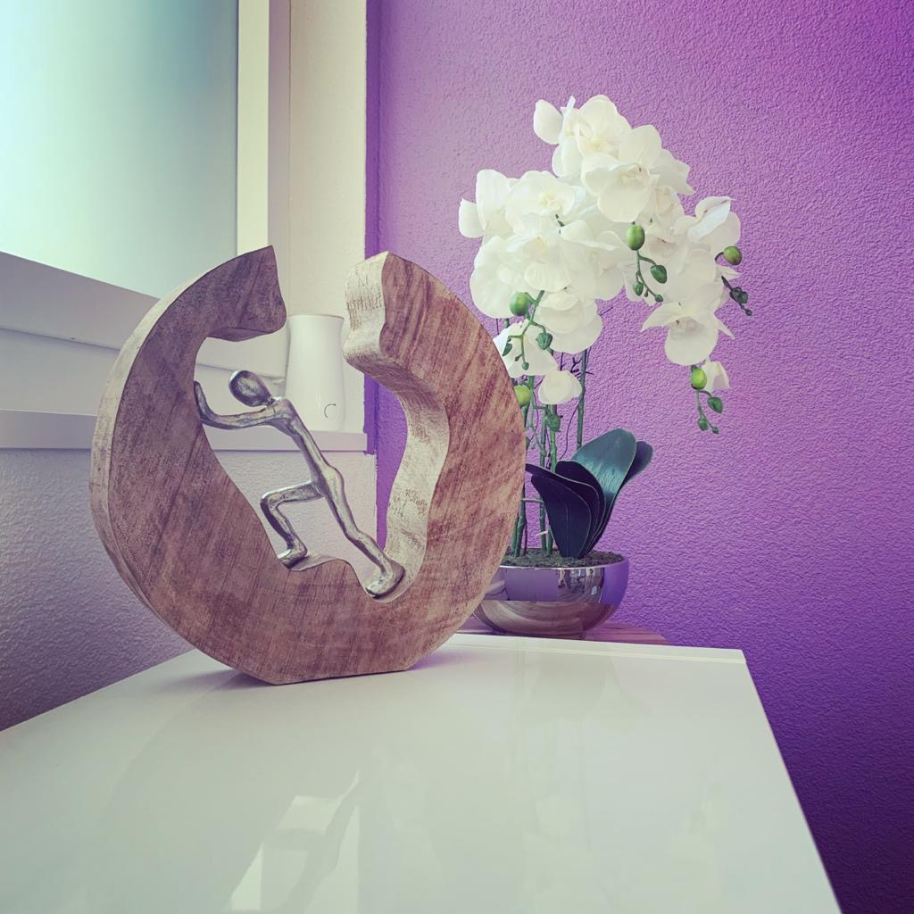
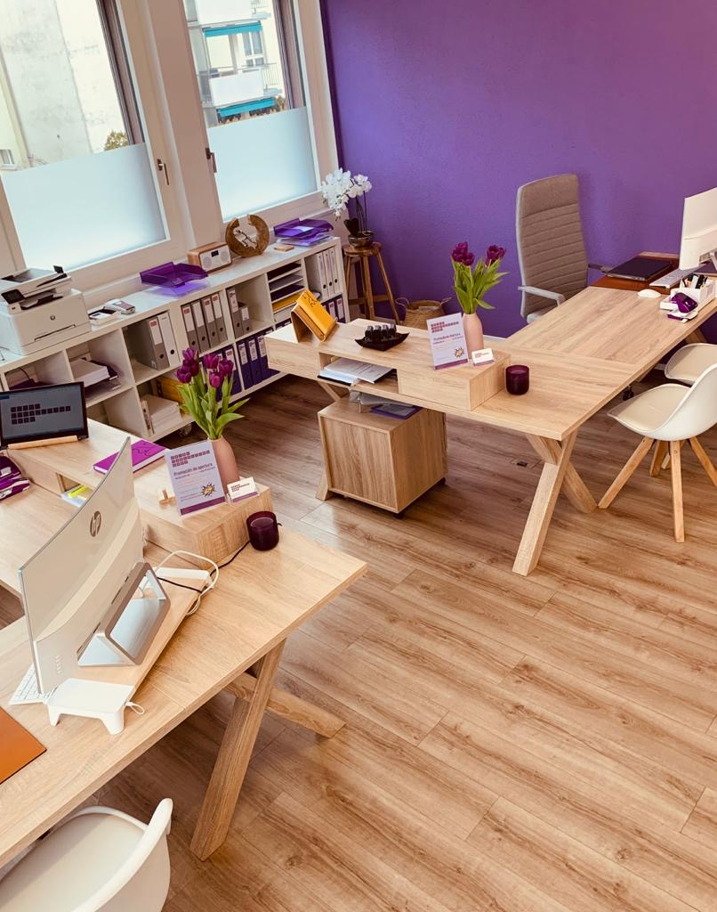
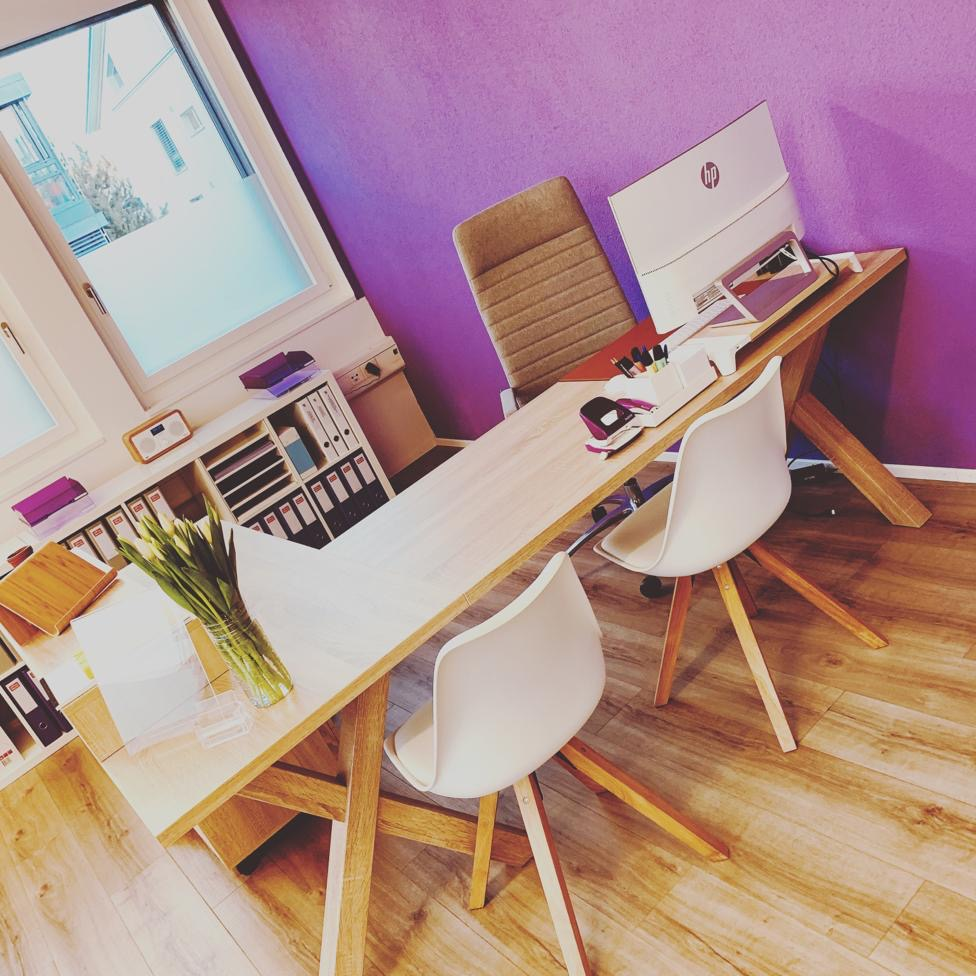

Steuererklärungen
Wir erstellen und reichen Ihre Steuererklärung ein — verständlich erklärt, mehrsprachig, fristgerecht.
Prime Consulting GmbH unterstützt Emigranten und lokale Klientinnen in Neuenkirch bei Steuern, Behörden und allen Themen rund um den Aufenthalt in der Schweiz — kompetent, diskret und fair.
Surseestrasse 6, 6206 Neuenkirch — direkt neben Leyla's Kebab-Restaurant
Prime Consulting GmbH ist ein Beratungsbüro mit Sitz in Neuenkirch, Kanton Luzern. Wir bieten kompetente und professionelle Beratung mit qualitativ hochwertigen Dienstleistungen.
Eine unserer grössten Stärken ist es, in der Schweiz lebende Emigranten zu unterstützen — bei allem, was Behörden, Sprache und Bürokratie betrifft. Durch regelmässige Weiterbildungen halten wir unser Know-how stets auf dem neuesten Stand.
Diskretion, Fairness und ein attraktives Preis-Leistungs-Verhältnis zeichnen uns aus. Wir sprechen Ihre Sprache — auf Deutsch, Spanisch und Portugiesisch.
Wir erstellen und reichen Ihre Steuererklärung ein — verständlich erklärt, mehrsprachig, fristgerecht.
Anmeldung, Pflichten, Termine: Wir begleiten Sie durch den gesamten RAV-Prozess in Ihrer Sprache.
Briefe, Formulare, Telefonate — wir übersetzen und vermitteln zwischen DE und ES bzw. DE und PT.
AHV, Pensionskasse, Säule 3a: Wir bringen Struktur in den Pensionierungsprozess — Schritt für Schritt.
Abmeldung, Versicherungen, AHV-Auszahlung, Steuern — wir koordinieren Ihre Ausreise sauber bis zum letzten Schritt.
Wir kennen die Hürden des Emigranten-Alltags und unterstützen Sie auch bei allen kleineren Themen.
Bürokratie ist in jedem Land kompliziert — noch komplizierter, wenn die Sprache fremd ist. Wir helfen Ihnen konkret bei:
«Prime Consulting GmbH — ein Stück Freiheit für Sie.»
Unser Versprechen seit Tag eins: Sie sollen Ihren Aufenthalt in der Schweiz mit der gleichen Ruhe und Sicherheit angehen können, wie Sie es in Ihrem Heimatland tun würden.
Echte Google-Bewertungen — auf Deutsch, Spanisch und Portugiesisch. So, wie wir beraten.
«Tuve una experiencia súper buena con la consultora para mi
salida definitiva del país. Me acompañaron en todo el proceso
y me hicieron todo mucho más fácil. Luisa se encargó de todo
y fue un amor: siempre con buen rollo, paciente y muy clara
con cada paso. Me lo llevó todo en 2022 y a día de hoy sigo
teniendo contacto con ellas. ¡Súper recomendados!»
«Zwei erstklassige Profis und wunderbare Menschen. Freundlicher und effizienter Service. Ich werde sie jederzeit weiterempfehlen. Vielen Dank für Ihre Dienste.»
«Serviço 5☆ — todos os processos tratados com maior
profissionalismo. Uma pessoa sente-se amparada a tratar de
todos os assuntos burocráticos. Recomendo!»
«4 años pidiendo su ayuda y son muy eficientes profesionales,
amables — te tratan como familia y sabes que están siempre que
las necesites. Gracias tanto a Luisa como a Andrea.»
«Muito simpáticas. Adoro o trabalho delas, explicam tudo muito
bem, fazem as coisas bem feitas. Estou muito satisfeita.
Recomendo 100%.»
«Ich kann es uneingeschränkt empfehlen. Exzellenter Service und hervorragende Qualität.»
Auswahl aus öffentlichen Google-Bewertungen für Prime Consulting GmbH, Neuenkirch.
Deutsche & spanische Beratung
Deutsche & portugiesische Beratung


decoding="async">
decoding="async">| Montag | Vormittag geschlossen 13.30 – 18.00 Uhr |
|---|---|
| Dienstag | 09.00 – 12.30 / 13.30 – 18.00 Uhr |
| Mittwoch | 09.00 – 12.30 / 13.30 – 18.00 Uhr |
| Donnerstag | 09.30 – 12.30 / 13.30 – 20.00 Uhr |
| Freitag | 09.00 – 12.30 / 13.30 – 17.00 Uhr |
| Samstag | nach Vereinbarung |
| Sonntag | geschlossen |
Ab Luzern mit dem Bus Nr. 72 bis zur Haltestelle «Neuenkirch Kirche». Prime Consulting liegt gleich rechts der Haltestelle — neben Leyla's Kebab-Restaurant.
Über die A2 (Ausfahrt Sempach/Neuenkirch) erreichen Sie uns in wenigen Minuten. Parkmöglichkeiten in unmittelbarer Umgebung.
In Google Maps öffnenRufen Sie uns an, schreiben Sie uns eine E-Mail — oder kommen Sie direkt vorbei. Wir nehmen uns Zeit für Sie, auf Deutsch, Spanisch oder Portugiesisch.